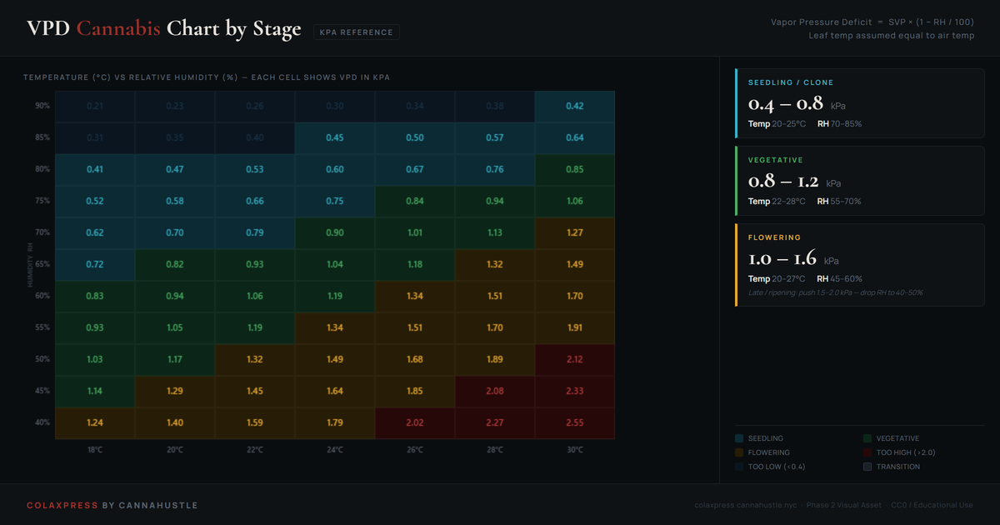

VPD chart for cannabis: targets by grow stage, in kPa.
Vapor pressure deficit (VPD) tells you how aggressively your plant is pulling water through its roots. Too low and transpiration slows, nutrient uptake stalls, and the canopy stays wet. Too high and the plant shuts stomata to conserve water, nutrient flow drops, and growth slows regardless of your feeding program. The right VPD range shifts at every stage.
This chart gives you the precise kPa targets for seedling, vegetative, and flowering, plus the temperature-versus-humidity grid that tells you how to hit them in a real environment.

What VPD actually measures
VPD is the difference between the maximum water vapor the air could hold at a given temperature and the amount it actually holds. A high VPD means dry air with a strong pull on leaf moisture. A low VPD means saturated air with almost no pull. The plant regulates this by opening or closing stomata.
The formula is straightforward: VPD = SVP × (1 − RH/100), where SVP (saturated vapor pressure) is a function of temperature alone. This is why two environments at the same relative humidity but different temperatures can have completely different VPD readings — warmer air holds far more water vapor, so the deficit is larger even at identical RH.
In a DWC setup, VPD management pairs directly with reservoir temperature. Roots in cool water while canopy air is warm creates a vapor pressure mismatch that compounds oxygen demand at the root zone. Keeping leaf zone VPD in range and reservoir temps between 18–22°C (65–72°F) solves most transpiration and dissolved-oxygen problems simultaneously.
VPD = SVP × (1 − RH/100)
RH = relative humidity as a percentage
SVP = saturated vapor pressure in kPa
Stage-by-stage VPD targets
0.4 – 0.8 kPa
Young plants have undeveloped root systems and cannot compensate for high transpiration. High humidity (70–85% RH) at moderate temperatures (20–25°C) keeps VPD in range. Most seedling trays and clone domes are designed to passively hold this. Avoid exceeding 0.9 kPa before the plant shows vigorous new growth and the root mass is established.
Practical targets: 22°C / 75% RH = ~0.65 kPa. 24°C / 80% RH = ~0.60 kPa.
0.8 – 1.2 kPa
Vegetative cannabis benefits from active transpiration. A VPD of 0.8–1.2 kPa keeps stomata open, drives nutrient uptake through the root zone, and supports rapid canopy expansion. In DWC this is the stage where dissolved oxygen in the reservoir matters most — high transpiration combined with inadequate root oxygenation is the leading cause of root slime and stunted veg growth.
Practical targets: 26°C / 65% RH = ~1.05 kPa. 24°C / 65% RH = ~0.95 kPa.
1.0 – 1.5 kPa
As flowering begins, start lowering RH. The developing bud structure traps moisture and mold pressure increases. Dropping RH to 50–60% while keeping temperatures in the 22–26°C range puts VPD in the 1.0–1.5 range that supports strong resin development without opening the canopy to powdery mildew or botrytis.
Practical targets: 25°C / 55% RH = ~1.30 kPa. 24°C / 58% RH = ~1.18 kPa.
1.5 – 2.0 kPa
Pushing toward 1.5–2.0 kPa in the final weeks is the single most effective environmental tool for reducing late-stage mold and maximizing terpene concentration. Drop RH to 40–50%, keep temps at 20–25°C, and let the plant experience the dry pull it was built for. Do not exceed 2.0 kPa — above that, stomata close and you lose the benefit.
Practical targets: 24°C / 45% RH = ~1.75 kPa. 22°C / 48% RH = ~1.52 kPa.
How to hit your VPD target in a small grow
Most compact grows have one variable you can move easily: the humidifier or dehumidifier. Temperature is harder to control without HVAC. The practical approach is to decide your temperature range first based on your equipment and the season, then dial RH to match the VPD target for your current stage.
In a DWC tent setup like the VIVOSUN vGrow, the environmental sensor reads canopy-level temperature and humidity. That reading is what you use for VPD calculations — not the ambient room temperature outside the tent. The difference can be 2–5°C, which changes the VPD by 0.1–0.3 kPa.
During lights-off the temperature drops and humidity rises, which lowers VPD. This is expected. What matters is the average during the lit period when stomata are active. If your lights-on VPD is in range, the overnight dip is not a problem unless it pushes below 0.3 kPa for extended periods (condensation, wet canopy, mold risk).
| Stage | VPD kPa | RH % | Temp °C |
|---|---|---|---|
| Seedling | 0.4–0.8 | 70–85 | 20–25 |
| Vegetative | 0.8–1.2 | 55–70 | 22–28 |
| Early Flower | 1.0–1.5 | 50–60 | 22–26 |
| Late Flower | 1.5–2.0 | 40–50 | 20–25 |
VPD questions
Does leaf temperature matter for VPD?
Technically, VPD should be calculated using leaf surface temperature, not air temperature. In practice, leaf temperature is 1–3°C lower than air temperature under strong LED lighting due to transpiration cooling. For a correction, subtract 1–2°C from your air temperature reading before looking up the chart. Most growers use air temperature as a close enough proxy, especially at the vegetative stage. The correction becomes more meaningful during late flower when you are trying to push VPD toward 1.8–2.0 kPa.
What happens if VPD is too low for too long?
Prolonged low VPD (below 0.4 kPa, typically above 80% RH at flowering temperatures) creates standing moisture on leaves and in bud structure, dramatically increasing powdery mildew and botrytis risk. It also suppresses nutrient uptake because transpiration drives the upward flow of water and dissolved nutrients from roots to canopy. Plants in a perpetually low-VPD environment often look lush but test low on potency and yield because the vascular system was never pushed to work.
What happens if VPD is too high?
Above 2.0 kPa, most cannabis plants close stomata defensively. When stomata close, CO2 cannot enter for photosynthesis and transpiration stops. You will see heat stress symptoms — leaf cupping, bleaching near the light, and eventually leaf edges that look burned even when the light is at the correct distance. In DWC, high VPD also accelerates reservoir evaporation and concentrates nutrients faster, pushing EC higher than intended.
How do I read the VPD grid above?
Find your current temperature on the horizontal axis (°C) and your current relative humidity on the vertical axis (%). The cell where they intersect shows the VPD in kPa. Match that number to the stage chart on the right to see whether you are in the seedling zone (teal), vegetative zone (green), flowering zone (amber), or outside the safe range. To move your VPD: raising temperature increases VPD, lowering RH increases VPD. Both work; RH is usually easier to adjust.
Related grow guides
DWC for beginners
Root zone, oxygen, nutrient solution, and the checks that keep a DWC system clean and productive.
Root problems in DWC
Brown roots, slime, and root rot — how to diagnose, treat, and prevent the most common DWC failures.
What to buy first
The tools and sensors that matter for VPD control: thermometer-hygrometer placement, humidifier sizing, and grow tent selection.